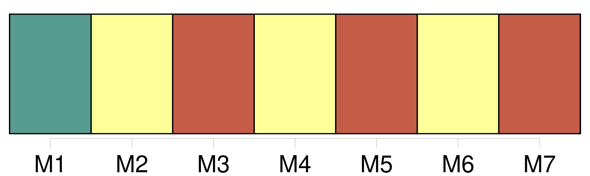
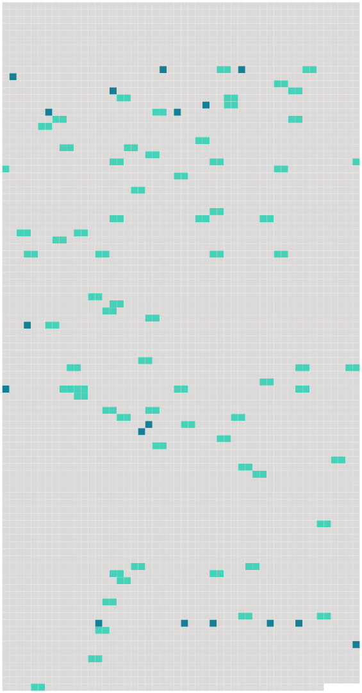

Longueur nb maillons : 85 mentions |
 |
Convention portant création d'un institut universitaire européen
[L'Institut] a [son] siège à Florence. [1 phrases] [L'Institut] a pour mission de contribuer, par [son] action dans le domaine de l'enseignement supérieur et de la recherche, au développement du patrimoine culturel et scientifique de l'Europe considéré dans son unité et sa diversité. [4 phrases]
[L'Institut] doit être également le lieu de rencontre et de confrontation d'idées et d'expériences sur des sujets relevant des disciplines faisant l'objet de [ses] études et recherches. [1 phrases]
Les Etats contractants prennent toutes les mesures propres à faciliter l'accomplissement de la mission de [l'Institut] , dans le respect de la liberté de la recherche et de l'enseignement. [1 phrases] Les Etats contractants favorisent le rayonnement de [l'Institut] dans le monde universitaire et scientifique.
A cet effet, ils assistent [l'Institut] en vue d'établir une coopération appropriée avec les institutions universitaires et scientifiques situées sur leur territoire, ainsi qu'avec les organismes européens et internationaux compétents pour les questions d'éducation, de culture et de recherche. [1 phrases]
Dans le cadre de [ses] compétences, [l'Institut] coopère avec les universités et tous les organismes d'enseignement et de recherche nationaux ou internationaux désireux de lui prêter leur concours ; [il] peut conclure des accords avec des Etats et des organismes internationaux.
Article 4
[L'Institut] conclut avec le gouvernement de la République italienne un accord de siège, approuvé à l'unanimité par le conseil supérieur.
CHAPITRE II [8 phrases] Le conseil supérieur est responsable de l'orientation principale de [l'Institut] ; il règle le fonctionnement de celui -ci et veille à son développement.
Il facilite les relations, d'une part, entre les gouvernements au sujet de [l'Institut] et, d'autre part, entre [l'Institut] et les gouvernements. [2 phrases]
Statuant à l'unanimité, le conseil supérieur [1 phrases]
Statuant à la majorité qualifiée, le conseil supérieur prend les décisions autres que celles prévues au paragraphe 5, notamment celles qui concernent : [6 phrases] Le président dirige [l'Institut]
Il procède ou veille à l'exécution des actes et décisions pris en application de la convention et prend les décisions administratives qui ne relèvent pas de la compétence des autres organes de [l'Institut] [1 phrases] Il est chargé de l'administration de [l'Institut]
Il assure la représentation juridique de [celui -ci] [2 phrases]
Il nomme les membres du personnel administratif de [l'Institut] [1 phrases]
Le président de [l'Institut] est choisi par le conseil supérieur, sur une liste de trois noms proposés par le conseil académique. [3 phrases]
Un secrétaire général assite le président de [l'Institut] dans ses tâches d'organisation et d'administration. [5 phrases]
Le conseil académique possède une compétence générale en matière de recherche et d'enseignement, sans préjudice des compétences des autres organes de [l'Institut]
Il est présidé par le président de [l'Institut] [1 phrases]
Sont membres du conseil académique : [5 phrases]
Le conseil académique [3 phrases] Un bureau du conseil académique, présidé par le président de [l'Institut] , assisté du secrétaire général et composé du président et des chefs de départements, exerce les tâches particulières qui lui sont confiées par le conseil académique. [2 phrases]
Organisation académique [1 phrases]
Dès [sa] création, [l'Institut] comporte quatre départements respectivement consacrés aux disciplines suivantes : [10 phrases]
Les travaux de recherche à mener dans les séminaires et équipes de recherche doivent être définis dans la limite des programmes d'études et de recherches prévus à l'article 9 paragraphe 5 et en considération de la mission de [l'Institut] [2 phrases]
[L'Institut] peut organiser des stages et des colloques auxquels peuvent participer des personnes ayant déjà acquis une expérience professionnelle dans les disciplines faisant l'objet d'études et de recherches de [l'Institut] [1 phrases]
[L'Institut] dispose d'une bibliothèque et d'un service de documentation relevant du budget annuel de fonctionnement. [4 phrases]
[L'Institut] est habilité à décerner, dans les disciplines faisant l'objet de [ses] études et recherches, un doctorat de [l'Institut universitaire européen] aux chercheurs qui ont accompli au moins deux années d'études dans [l'Institut] et présenté un travail de recherche original de haute qualité ayant recueilli l'accord de [l'Institut] et qui doit être publié conformément aux dispositions fixées en application du paragraphe 3. [1 phrases]
[L'Institut] est habilité à décerner des certificats d'assiduité aux chercheurs. [6 phrases] Les membres du corps enseignant sont choisis parmi les personnalités ressortissantes des Etats contractants dont les qualifications sont de nature à conférer une haute valeur aux travaux de [l'Institut]
En outre, [l'Institut] peut faire appel au concours de ressortissants d'autres Etats. [1 phrases]
Les Etats contractants prennent, dans les limites de leurs possibilités, toutes dispositions utiles en vue de faciliter la mobilité des personnes appelées à faire partie du corps enseignant de [l'Institut] [1 phrases]
Au sens de la convention, les chercheurs de [l'Institut] sont les étudiants ou chercheurs titulaires de titres universitaires nationaux justifiant de leur aptitude à entreprendre ou poursuivre des recherches et qui répondent aux conditions prévues à l'article 27 paragraphe 3 et sont admis à [l'] Institut. [1 phrases]
[L'Institut] est ouvert aux ressortissants des Etats contractants. [2 phrases] L'admission à [l'] Institut est prononcée par le jury d'admission sur la base des règles fixées par la convention et par les dispositions réglementaires arrêtées par le conseil supérieur. [1 phrases]
Les autorités compétentes des Etats contractants prêtent leur concours à [l'Institut] en vue de l'application de la procédure d'admission. [1 phrases]
Chacun des Etats contractants favorise, dans la limite des crédits disponibles, l'octroi de bourses à ceux de ses ressortissants admis à [l'Institut] dont la situation le rendrait nécessaire, en prenant, le cas échéant, toutes mesures utiles pour l'adaptation appropriée des dispositions régissant l'octroi des bourses. [8 phrases]
Toutes les recettes et les dépenses de [l'Institut] doivent faire l'objet de prévisions pour chaque exercice budgétaire et être inscrites au budget. [1 phrases]
Les dispositions réglementaires financières énumèrent les recettes de [l'Institut] [5 phrases]
Les contributions financières des Etats contractants destinées à faire face aux dépenses prévues au budget de [l'Institut] sont déterminées selon la clef de répartition suivante : [12 phrases]
Article 22 [15 phrases]
La République italienne met gratuitement à la disposition de [l'Institut] un terrain situé à Florence, ainsi que les bâtiments nécessaires au fonctionnement de [l'Institut] et en assume l'entretien.
Dans les mêmes conditions, la République italienne met à la disposition du corps enseignant, des chercheurs ainsi que du personnel de [l'Institut] , un restaurant équipé et un foyer construits sur le terrain de [l'Institut] [3 phrases]
Le conseil supérieur, statuant à l'unanimité sur proposition du président de [l'Institut] ou de l'un des membres du conseil supérieur, arrête les dispositions réglementaires financières spécifiant notamment : [3 phrases]
Les langues officielles de [l'Institut] sont l'allemand, l'anglais, le danois, le français, l'italien et le néerlandais. [5 phrases]
Le conseil académique peut admettre une exception pour les spécialistes appeles à participer à des travaux determinés de [l'Institut]
Article 28
[Il] peut notamment acquérir ou aliéner des biens immobiliers ou mobiliers, [conclure] des contrats et [ester] en justice ; à cet effet, [il] est représenté par [son] président.
Article 29 [7 phrases]
Les huit premiers enseignants de [l'] Institut sont choisis à l'unanimité par un comité académique provisoire composé de deux représentants de chacun des Etats contractants, dont au moins un universitaire. [1 phrases]
Article 31 [6 phrases]
Article 34 |
 |
Il est possible de télécharger la ressource sur la page Ortolang |
Si vous avez des questions ou vous voyez des erreurs, merci d'envoyer un mail à silvia.federzoni89@gmail.com |